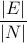
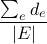
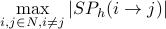
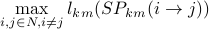
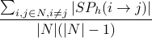
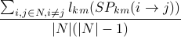
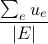
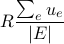
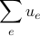
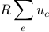

Contents
Introduction
This report extracts information from the network topology: links and nodes in the network, and adds some metrics related to link capacities and offered and carried traffic, if this information is available. The description and formulas included in this report follow the notation guidelines described in the Notation section in the Net2Plan help file.
Topology metrics
This section includes some metrics calculated from the topology. Clicking the metric name links to the description of the metric.
- Number of nodes (|N|)
- The number of nodes of the topology.
- Number of unidirectional links (|E|)
- The number of unidirectional links of the topology.
- Average node degree
- This is the ratio between the number of links and number of nodes in the network. Is given by:

- Average link distance (km)
- The sum of the distances in km of all the links, divided by the number of links. Is given by:

- Network diameter (hops)
- The number of hops that has the shortest path (in number of hops) with largest number of hops among all the shortest paths between every node pair in the network. Is given by:

where SPh(i→j) is a shortest path in number of hops from node i to node j, and as usual |p| represents the number of traversed links of a path p.
- Network diameter (km)
- The length in km that has the shortest path (in km) with largest length (in km) among all the shortest paths between every node pair in the network. Is given by:

where SPkm(i→j) is a shortest path in km from node i to node j, and as usual lkm(p) represents the sum of the km traversed by path p.
- Average shortest path distance (hops)
- The average number of hops of the shortest paths (in number of hops) among every node pair in the network. Is given by:

where SPh(i→j) is a shortest path in number of hops from node i to node j, and as usual |p| represents the number of traversed links of a path p.
- Average shortest path distance (km)
- The average length in km of the shortest paths (in km) among all the shortest paths between every node pair in the network. Is given by:

where SPkm(i→j) is a shortest path in km from node i to node j, and as usual lkm(p) represents the sum of the km traversed by path p.
- Connected topology?
- 'Yes' if the topology is connected, 'No' otherwise. A topology is connected if for every two nodes i,j ∈ N, i≠j, there is a path between them traversing the links in the network.
- Bidirectional topology (links)?
- 'Yes' if the topology is bidirectional according to the links, 'No' otherwise. A topology is bidirectional according to the links, if for every two nodes i,j ∈ N, i≠j, the number of links i→j equals the number of links j→i.
- Bidirectional topology (links and capacities)?
- 'Yes' if the topology is bidirectional according to the links and the capacities, 'No' otherwise. A topology is bidirectional according to the links and the capacities, if for every two nodes i,j ∈ N, i≠j, the number of links i→j, at a given capacity value u, equals the number of links j→i with the same capacity value.
- Simple topology?
- 'Yes' if the topology is simple, 'No' otherwise. A topology is simple of it does not have parallel links nor self-links. Two links e, e' are parallel if they have the same input node and the same output node (a(e) = a(e'), b(e) = b(e')). Link e is a self-link if a(e) = b(e). Self-links are not allowed in Net2Plan.
Capacity metrics
This section includes some metrics calculated from link capacities. Clicking the metric name links to the description of the metric.
- Maximum capacity installed in a link (Erlangs, bps)
- The maximum capacity (in Erlangs and in bps) installed among the links of the network. The capacity values in Erlangs come directly from the netPlan field linkCapacityInErlangs. The values in bps are obtained by multiplying the values in Erlangs by the binaryRateInBitsPerSecondPerErlang constant in the Options menu of Net2Plan.
- Minimum capacity installed in a link (Erlangs, bps)
- The minimum capacity (in Erlangs and in bps) installed among the links of the network. The capacity values in Erlangs come directly from the netPlan field linkCapacityInErlangs. The values in bps are obtained by multiplying the values in Erlangs by the binaryRateInBitsPerSecondPerErlang constant in the Options menu of Net2Plan.
- Average capacity installed in a link (Erlangs, bps)
- The average capacity (in Erlangs and in bps) installed among the links of the network. The capacity values in Erlangs come directly from the netPlan field linkCapacityInErlangs. The values in bps are obtained by multiplying the values in Erlangs by the binaryRateInBitsPerSecondPerErlang constant in the Options menu of Net2Plan. Noting by ue the capacity of the links in Erlangs, and by R the binary rate equivalent to one Erlang, the average capacity installed in Erlangs is given by:

and the average link capacity in bps is given by:

- Total capacity installed in a link (Erlangs, bps)
- The total capacity (in Erlangs and in bps) installed in the network, summing the capacity in all the links. The capacity values in Erlangs come directly from the netPlan field linkCapacityInErlangs. The values in bps are obtained by multiplying the values in Erlangs by the binaryRateInBitsPerSecondPerErlang constant in the Options menu of Net2Plan. Noting by ue the capacity of the links in Erlangs, and by R the binary rate equivalent to one Erlang, the total capacity installed in Erlangs is given by:

and the total link capacity in bps is given by:

- Capacity module size (Erlangs, bps)
- The greatest common divisor of the capacities in the links. If the capacities in the links are modular (that is, a multiple of a basic module of capacity), this value will show the capacity of the modules. The values in bps are obtained by multiplying the values in Erlangs by the binaryRateInBitsPerSecondPerErlang constant in the Options menu of Net2Plan.
Traffic (demands and routing) metrics
This section includes some metrics calculated from traffic demands and routing (if available). Clicking the metric name links to the description of the metric.
- Total offered traffic to the network (Erlangs, bps)
- The total offered traffic (in Erlangs and in bps) to the network, summing the offered traffic by all the demands. The offered traffic values in Erlangs come directly from the netPlan field offeredTrafficInErlangs. The values in bps are obtained by multiplying the values in Erlangs by the binaryRateInBitsPerSecondPerErlang constant in the Options menu of Net2Plan.
- Total carried traffic by the network (Erlangs, bps)
- The total carried traffic (in Erlangs and in bps) to the network, summing the carried traffic by all the routes. The values in bps are obtained by multiplying the values in Erlangs by the binaryRateInBitsPerSecondPerErlang constant in the Options menu of Net2Plan.
- Average offered traffic per demand by the network (Erlangs, bps)
- The offered traffic per demand (in Erlangs and in bps) to the network. It is equivalent to divide the total offered traffic to the network by the number of demands.
- Average carried traffic per demand by the network (Erlangs, bps)
- The carried traffic per demand (in Erlangs and in bps) by the network. It is equivalent to divide the total carried traffic to the network by the number of demands.
- Blocked traffic (%)
- The percentage of traffic which is blocked (not carried) by the network.
- Avg. number of hops
- It represents the ratio between the in-network traffic (total sum of the carried traffic in all links) and the total carried traffic.
Detailed per-node description
This section provides a tabular information per node. Clicking in the column name links to a description of the column value.
#nodeInformationTable#
- Node id
- Internal (unique) identifier of the node for Net2Plan. It is the index of the node in the related tables in netPlan.
- Node name
- The name of the node as it appears in nodeName field of netPlan.
- X-Coord, Y-Coord
- The XY coordinates of the node as they appear in nodeXYPositionTable field of netPlan. The coordinates are measured in km.
- Attributes
- The attributes of the node as they appear in nodeAttributes field of netPlan. The number of attributes of each node is variable. Each attribute is composed of a name and a value. Usual attributes are node population, or node level (used in some traffic matrix generation models).
Detailed per-link description
#linkInformationTable#
- Link id
- Internal (unique) identifier of the node for Net2Plan. It is the index of the link in the related tables in netPlan.
- Start
- The node id and node name (in brackets) of the initial node of the link.
- End
- The node id and node name (in brackets) of the end node of the link.
- Link length (km)
- The length of the link in km, as given by the netPlan table linkLengthInKm.
- Attributes
- The attributes of the link as they appear in linkAttributes field of netPlan. The number of attributes of each link is variable. Each attribute is composed of a name and a value.
Detailed per-demand description
#demandInformationTable#
Detailed per-route description
#routeInformationTable#
Detailed per-protection segment description
#segmentInformationTable#
Detailed per-SRG description
#srgInformationTable#